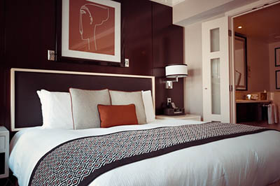
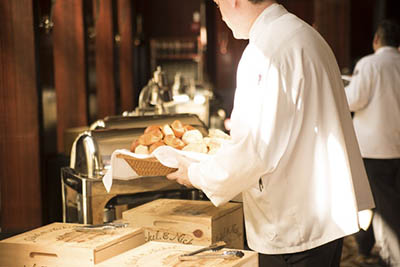
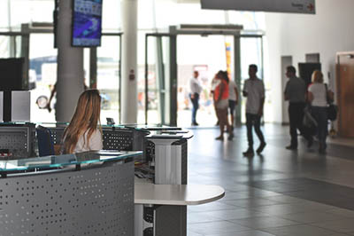

Amenities
Free amenities include:
- breakfast
- exercise/workout room
- indoor pool
- WiFi high-speed internet access and smart tvs
- parking
- family history consultation and family ordinance card services
Special Services
Some of the specialized services and features include:
- free access to changing rooms and bathroom facilities for temple patrons who have traveled far and need to change to and from church clothes
- a play room and low cost, short-term babysitting services for the children of patrons
- long term accommodations in kitchenette suites for full-time temple missionaries
- a temple history themed reception and sitting area
- a wedding reception hall that can be easily customized with a simple catering menu and kitchen access for food preparation and serving
- a business center that supports family search and ordinance work
Reception Services
- Customer computer and internet: There are multiple computers in the hotel reserved for customer use. Call the receptionist to reserve a time to do family history or find a spot to eat in the area.
- Storing baggage: There is a free and lockable baggage storage room at the hotel reception where you can store your baggage. Storage is at your own risk, as the room is not guarded. The hotel is not liable for money or valuables left in the baggage room.
- Alarm clock: You can order a wake-up call service from reception, reception open 24h.
- Shuttle service: There is a free shuttle service to and from the hotel to the local temple. The shuttle arrives at the temple every hour on the hour from 8:00 AM - 8:00 PM
Full-time Temple Missionary Info.
We have special accommodations for full-time temple missionaries. Some of these include:
- Special long-term pricing on our kitchenette suites
- Convenient carpool vehicles to take to the temple
- Skype enabled T.V's in each room to contact family after your temple session